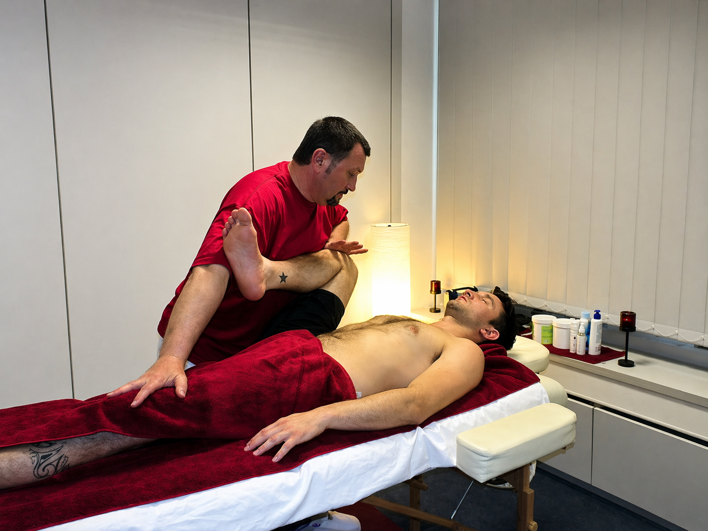
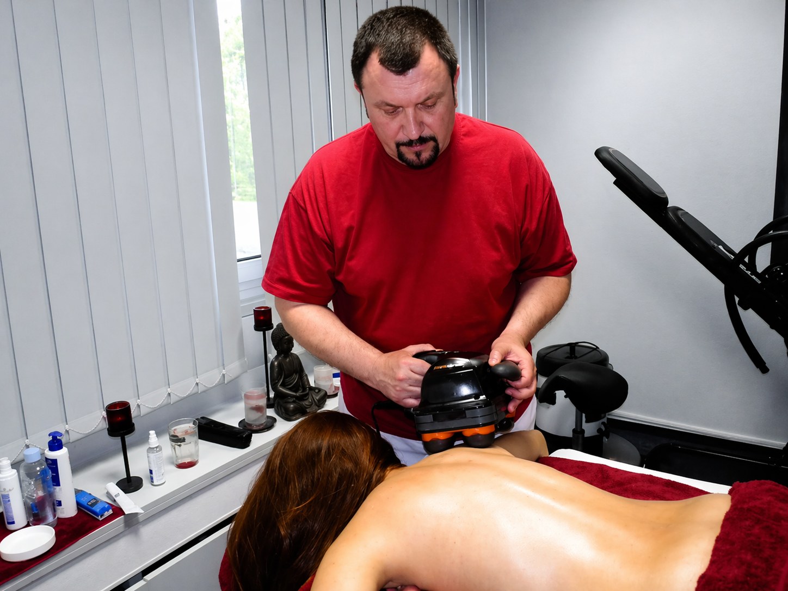
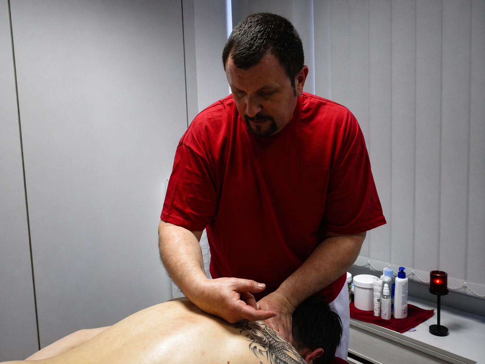
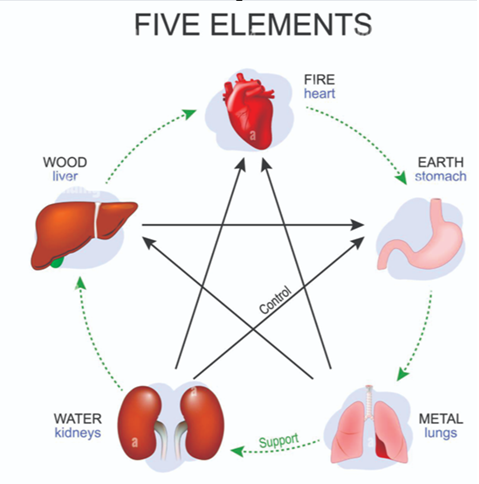
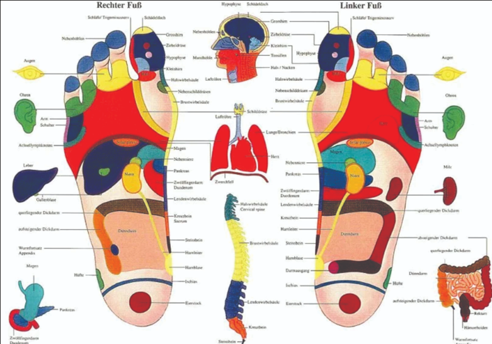
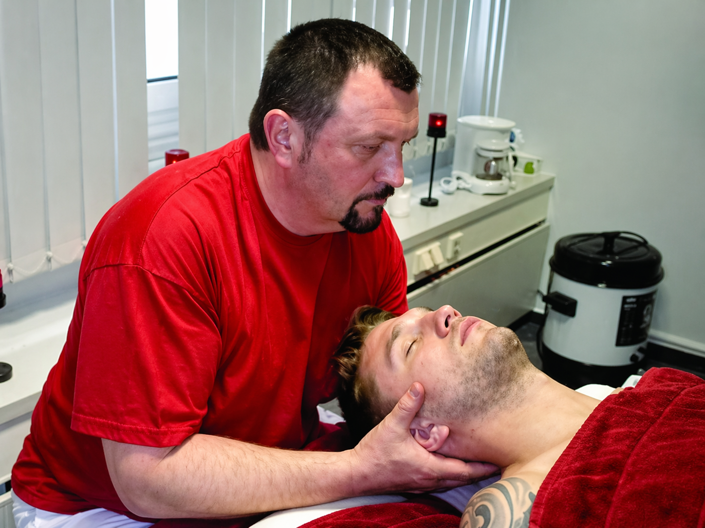

Gezielte Hilfe bei Schmerzen und Verspannungen. Bei Rücken-, Nacken- und muskulären Beschwerden. Wenn klassische Massagen nicht mehr helfen — hier beginnt die gezielte Arbeit an der Ursache.

KiroShiatsu® ist eine eigens entwickelte manuelle Methode zur gezielten Schmerzlinderung und Behandlung muskulärer Blockaden. Sie basiert auf präzisen Grifftechniken aus der therapeutischen Körperarbeit.
Anders als bei herkömmlichen Massagen arbeite ich nicht oberflächlich — ich suche die Ursache der Beschwerden und behandle sie gezielt. Jede Anwendung wird individuell angepasst, je nach Beschwerde, Organismus und Situation. Meine Arbeit basiert nicht auf Standardtechniken, sondern auf Erfahrung, Präzision und Körperkenntnis.



Jede Behandlung beginnt mit einer gründlichen Analyse Ihrer funktionellen Spannungsmuster. Durch präzise Tastuntersuchung und Gespräch identifizieren wir Blockaden, Ungleichgewichte und deren Ursachen — ehrlich und transparent.

Jede Anwendung wird individuell angepasst — keine Standardtechnik. KiroShiatsu® kombiniert präzise Grifftechniken mit Elementen aus Shiatsu, Tui Na, Lymphdrainage und Fußreflexzonen, um gezielt Impulse zu setzen.

Ich arbeite nicht oberflächlich, sondern suche die Ursache der Beschwerden. Ziel ist eine Integration der Behandlung in den Körper — nachhaltige Besserung und dauerhafte Veränderung statt kurzfristiger Entspannung.
 一
一
In einer einzigen Sitzung werden verschiedene therapeutische Impulse miteinander verwoben — Shiatsu, Tui Na, Lymphdrainage und präzise Grifftechniken fließen zu einer einzigen, abgestimmten Behandlung zusammen.

二Gezielte manuelle Arbeit ohne Standardprotokoll. Jede Anwendung folgt der Anatomie, den Meridianen und den spezifischen Bedürfnissen Ihres Körpers — nicht einem vorgefertigten Schema.

三Ruhig, klar und reflektiert. Die Behandlung entfaltet sich in einer Atmosphäre von Gelassenheit und Konzentration — hier geht es nicht um Geschwindigkeit, sondern um Tiefe.
Eine Auswahl der therapeutischen Anwendungen, die ich individuell und in Kombination einsetze — für gezielte Schmerzlinderung und muskuläre Regeneration. Auch mit blauem Privatrezept von Ärzten oder Heilpraktikern möglich.

Gezielte Behandlung für Aktive und Athleten. Beschleunigt die Regeneration, beugt Verletzungen vor und optimiert die Leistungsfähigkeit.
Gezielte Behandlung für Athleten, Leistungssportler und alle körperlich Aktiven — individuell an Sportart und Trainingsphase angepasst.
Die Sportmassage ist kein Wellness-Ritual, sondern gezielte Arbeit an der Muskulatur, Faszien und Gelenken. Sie kombiniert tiefe Streichungen, Knetungen, Friktionen und Dehnungen, um die körperliche Leistungsfähigkeit zu unterstützen und Verletzungen vorzubeugen.

Japanische Druckpunkttechnik entlang der Meridiane. Reguliert den Energiefluss, löst tiefe Spannungen und fördert innere Balance.
Japanische Druckpunkttechnik mit Wurzeln in der Traditionellen Chinesischen Medizin — über 2000 Jahre alt.
Shiatsu (japanisch: „Fingerdruck") ist eine manuelle Technik, bei der mit Daumen, Handflächen, gelegentlich Ellbogen und Füßen präzise Druckpunkte entlang der Meridiane — der Energieleitbahnen des Körpers — stimuliert werden. Ziel ist es, den Fluss der Lebensenergie (Qi) zu regulieren und das innere Gleichgewicht zwischen Yin und Yang wiederherzustellen.
Die Behandlung erfolgt vollständig bekleidet auf einer Matte oder Behandlungsliege. Shiatsu wirkt nicht nur körperlich, sondern auch energetisch und emotional.
Stress, chronische Verspannungen, Schlafstörungen, Erschöpfung, hormonelle Ungleichgewichte, Kopfschmerzen, Verdauungsprobleme, energetische Blockaden.

Sanfte, rhythmische Technik zur Aktivierung des Lymphsystems. Reduziert Schwellungen, stärkt das Immunsystem und fördert die Entgiftung.
Sanfte, rhythmische Technik zur Aktivierung des Lymphsystems — entwickelt nach der Methode von Dr. Emil Vodder.
Das Lymphsystem ist das Entsorgungs- und Abwehrsystem unseres Körpers. Bei Schwellungen, nach Operationen oder bei chronischer Belastung kann der Lymphfluss stagnieren. Die Manuelle Lymphdrainage regt mit feinen, kreisenden Bewegungen den Lymphtransport an — sanft, aber äußerst wirksam.
Mit Privatrezept auch als Heilbehandlung möglich.

Über die Füße den ganzen Körper erreichen. Gezielter Druck auf Reflexpunkte harmonisiert Organe und Systeme auf sanfte, wirksame Weise.
Über präzise Druckpunkte an den Füßen wird der gesamte Körper erreicht — jede Zone korrespondiert mit einem Organ oder Körperbereich.
Die Fußreflexzonentherapie basiert auf der Erkenntnis, dass der Fuß ein Mikrosystem des gesamten Körpers darstellt. Durch gezielten Druck auf bestimmte Zonen lassen sich Organfunktionen harmonisieren und die Selbstheilungskräfte des Körpers aktivieren.

Traditionelle chinesische Manualtherapie. Kombiniert Dehnung, Druck und rhythmische Bewegungen zur Wiederherstellung der Körperharmonie.
Eine der ältesten Formen der Manualtherapie — eine tragende Säule der Traditionellen Chinesischen Medizin (TCM), deren Wurzeln über 2000 Jahre zurückreichen.
Der Name Tui Na bedeutet wörtlich „schieben und greifen". Die Therapie kombiniert präzise Grifftechniken mit Akupressur und Gelenkmobilisationen. Anders als bei westlichen Massagen arbeitet Tui Na entlang der Meridiane und zielt darauf ab, den freien Qi-Fluss wiederherzustellen und Blockaden zu lösen.

Präzise Akupunktur-Punkte am Ohr regulieren Schmerzen, Stress und chronische Beschwerden. Sanft, gezielt und effektiv.
Eine präzise Form der Reflextherapie — das Ohr als Landkarte des gesamten Körpers.
Die Ohrakupunktur (Aurikulotherapie) wurde in den 1950er Jahren von dem französischen Arzt Dr. Paul Nogier entwickelt. Sie basiert auf der Erkenntnis, dass das Ohr ca. 200 Reflexpunkte enthält, die jeweils mit einem bestimmten Organ, Gelenk oder Körperbereich korrespondieren. Durch die gezielte Stimulation dieser Punkte lassen sich Beschwerden sanft und präzise behandeln.
Seit über 35 Jahren arbeite ich mit Menschen, die oft schon vieles probiert haben — und endlich eine gezielte Lösung finden.
Beschreiben Sie mir kurz Ihr Problem — ich sage Ihnen ehrlich, ob und wie ich Ihnen helfen kann.
Jetzt Kontakt aufnehmen
Neben der therapeutischen Arbeit biete ich moderne, nicht-invasive Behandlungen zur Körperformung, Cellulite-Reduktion und Hautverjüngung.
Fettreduktion durch gezielte Kälte — klinisch geprüft, nicht-invasiv.
Gezielte Behandlung von Falten und Anti-Aging-Anwendungen.
Effektive Behandlung bei Cellulite zur sichtbaren Hautglättung.
Moderne Technologie zur gezielten Fettreduktion ohne Eingriff.
Ultraschall-Technologie zur Körperformung und Figurbildung.
Aktivierung des Lymphsystems zur Entwässerung und Drainage.
Hautstraffung und Kollagenstimulation durch Radiofrequenz.
Manuelle Körperformung mit traditionellen Holzwerkzeugen.
 Privatrezept
Privatrezept
Behandlungen können mit blauem Privatrezept von Ärzten oder Heilpraktikern als medizinische Heilbehandlung durchgeführt werden.
Wenn Sie über ein Privatrezept verfügen, können Sie selbstverständlich die von Ihrem Arzt empfohlene Behandlung in meiner Praxis erhalten.
Wenn Ihre private Krankenversicherung die empfohlenen Behandlungen übernimmt, erhalten Sie nach der Behandlung eine entsprechende Rechnung zur Einreichung bei Ihrer Versicherung.
Er weiß genau, wovon er spricht, und seine Erfahrung zeigt sich in jeder Behandlung. Außergewöhnliche Arbeit mit wertvollen Tipps für den Alltag.
Er findet die Ursache des Schmerzes und weiß präzise und gezielt zu arbeiten. Nach Jahren voller Versuche endlich eine echte Lösung.
Bei ihm sind Sie in sehr guten Händen — fachlich wie menschlich. Er nimmt sich Zeit, erklärt verständlich und arbeitet mit großer Präzision.
Ihre Rückmeldung hilft mir, meine Arbeit weiter zu verbessern — und anderen Menschen, Vertrauen zu fassen. Schreiben Sie mir ein paar Zeilen über Ihre Behandlung.
Verantwortungsvolle Behandlung bedeutet auch, Grenzen zu erkennen. In bestimmten Fällen ist eine manuelle Therapie nicht angezeigt — Ihre Sicherheit hat Vorrang.
Bei diesen Zuständen findet keine Behandlung statt.
Bei Fieber, Grippe oder akuten entzündlichen Erkrankungen verschiebe ich die Behandlung bis zur vollständigen Genesung.
Bei bestehender oder verdächtigter Thrombose ist eine Massage nicht möglich — akute Lebensgefahr durch Embolie-Risiko.
Offene Wunden, Ekzeme oder infektiöse Hauterkrankungen im Behandlungsbereich werden nicht massiert.
Nicht verheilte Frakturen, Sehnen- oder Muskelrisse werden zuerst ärztlich behandelt.
Bei akutem Herzinfarkt, Schlaganfall oder schweren Kreislaufstörungen ist keine Behandlung möglich.
Bei aktiven, unbehandelten Krebserkrankungen wird nur nach ärztlicher Rücksprache und sehr gezielt gearbeitet.
In diesen Fällen ist eine Behandlung nach ärztlicher Rücksprache möglich — angepasst an Ihre Situation.
Im ersten Trimester nur nach ärztlicher Freigabe. Ab dem zweiten Trimester mit angepassten Techniken und Lagerung möglich.
In der Wundheilungsphase warten wir die ärztliche Freigabe ab — danach unterstützen wir gezielt die Regeneration.
Bei medikamentös nicht eingestelltem Bluthochdruck: sanfte Techniken, keine stark aktivierenden Anwendungen.
In fortgeschrittenem Stadium wird mit stark reduziertem Druck und angepassten Techniken gearbeitet.
Bei gut eingestelltem Diabetes kein Problem — bei akuter Entgleisung bitte ärztliche Rücksprache.
Bei bekannten Blutgerinnungsstörungen oder Einnahme blutverdünnender Medikamente: sanfte Techniken.
Bei gut eingestellter Epilepsie möglich — wir vermeiden jedoch stark stimulierende Techniken.
Im Bereich ausgeprägter Krampfadern wird nicht direkt gearbeitet — Behandlung angrenzender Bereiche ist möglich.
Verantwortungsvolle Behandlung bedeutet Transparenz. Teilen Sie mir vor der ersten Sitzung Ihre Vorerkrankungen, aktuellen Medikamente und Beschwerden mit. Gemeinsam prüfen wir, ob und wie eine Behandlung für Sie sicher und wirksam durchgeführt werden kann.
Jetzt Situation besprechenWenn Sie schon vieles probiert haben und keine nachhaltige Besserung spüren, könnte ein anderer Ansatz der richtige Schritt sein. Ich nehme mir die nötige Zeit für Ihr Anliegen — individuell und gezielt abgestimmt auf Ihren Körper.
Detmolder Str. 429
33605 Bielefeld · Stieghorst
Montag – Freitag
9:00 – 18:00 Uhr
Behandlung mit blauem Privatrezept von Ärzten oder Heilpraktikern möglich. Rechnung nach der Behandlung zur Einreichung bei Ihrer Versicherung.